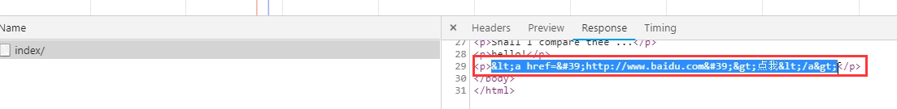
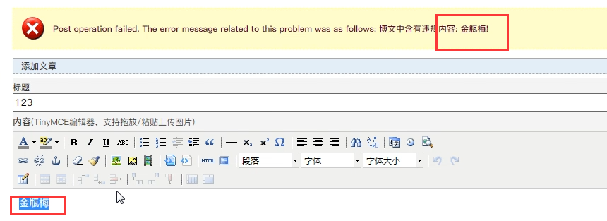
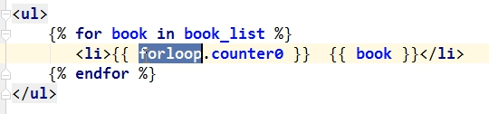
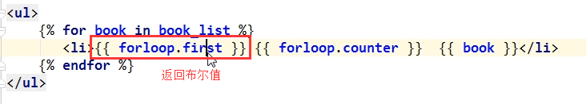
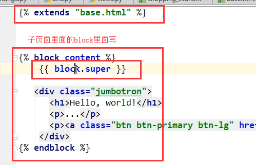
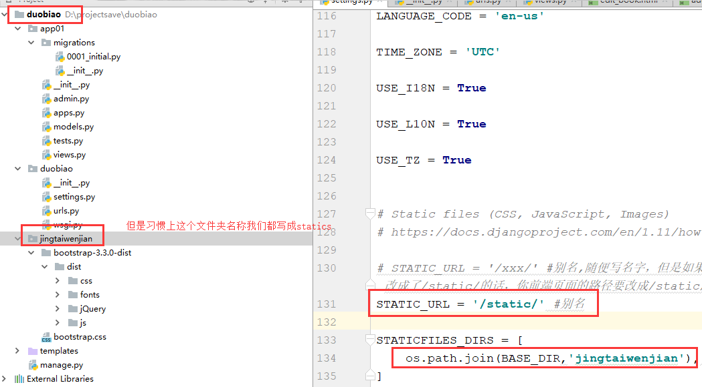
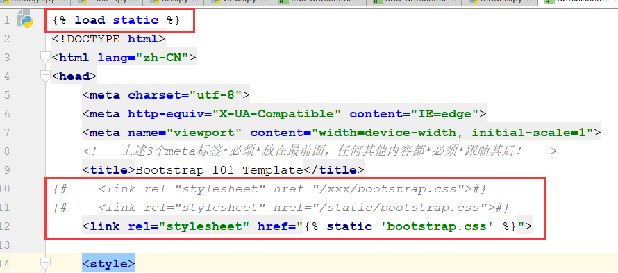

模板渲染的官方文档
关于模板渲染你只需要记两种特殊符号（语法）：
{{ }}和 {% %}
变量相关的用{{}}，逻辑相关的用{%%}。
在Django的模板语言中按此语法使用：{{ 变量名 }}。
当模版引擎遇到一个变量，它将计算这个变量，然后用结果替换掉它本身。 变量的命名包括任何字母数字以及下划线 ("_")的组合。 变量名称中不能有空格或标点符号。
深度查询据点符（.）在模板语言中有特殊的含义。当模版系统遇到点(".")，它将以这样的顺序查询：
字典查询（Dictionary lookup）
属性或方法查询（Attribute or method lookup）
数字索引查询（Numeric index lookup）
注意事项：
def index(request):
import datetime
s = "hello"
l = [111, 222, 333] # 列表
dic = {"name": "yuan", "age": 18} # 字典
date = datetime.date(1993, 5, 2) # 日期对象
class Person(object):
def __init__(self, name):
self.name = name
def dream(self):
return 'dreamer'
person_yuan = Person("chao") # 自定义类对象
person_egon = Person("yantao")
person_alex = Person("jinxin")
person_list = [person_yuan, person_egon, person_alex]
return render(request, "index.html", {"l": l, "dic": dic, "date": date, "person_list": person_list})
# return render(request,'index.html',locals())
#locals()获取函数内容所有的变量，然后通过render方法给了index.html文件进行模板渲染，如果你图省事，你可以用它，但是很多多余的变量也被传进去了，效率低 模板中支持的写法：
<h4>{{s}}</h4>
<h4>列表:{{ l.0 }}</h4>
<h4>列表:{{ l.2 }}</h4>
<h4>字典:{{ dic.name }}</h4>
<h4>日期:{{ date.year }}</h4>
<!--取列表的第1个对象的name属性的值-->
<h4>类对象列表:{{ person_list.0.name }}</h4>
<!--取列表的第1个对象的dream方法的返回值，如果没有返回值，拿到的是none-->
<h4>类对象列表:{{ person_list.0.dream }}</h4>
注意：
调用对象里面的方法的时候，不需要写括号来执行，并且只能执行不需要传参数的方法，如果你的这个方法需要传参数，那么模板语言不支持，不能帮你渲染 注意我们直接在js代码中使用模板语法的时候，模板渲染的时候会有个转义的动作，将s = ['哈哈','xx']这种数据中的元素的引号变为一个特殊符号：
<script>
// 不加safe的话，引号会被转义。 // var a = {{ s }}
// var a = ['哈哈', 'xx'];
// console.log(a[0])
// 加上safe就正常了
var a = {{ s|safe }};
console.log(a[0]) // 还要注意，当我们模板渲染的时候，后端返回的数据是字符串的话，我们需要将{{ s }}外面加上引号 比如s = '哈哈' js中的写法 var a = '{{ s }}'
</script> 在Django的模板语言中，通过使用 过滤器 来改变变量的显示。
过滤器的语法： {{ value|filter_name:参数 }}
使用管道符"|"来应用过滤器。
例如：{{ name|lower }}会将name变量应用lower过滤器之后再显示它的值。lower在这里的作用是将文本全都变成小写。
注意事项：
Django的模板语言中提供了大约六十个内置过滤器。
如果一个变量是false或者为空，使用给定的默认值。 否则，使用变量的值。
{{ value|default:"nothing"}}如果value没有传值或者值为空的话就显示nothing
返回值的长度，作用于字符串和列表。
{{ value|length }}
返回value的长度，如 value=['a', 'b', 'c', 'd']的话，就显示4.
将值格式化为一个 “人类可读的” 文件尺寸 （例如 '13 KB', '4.1 MB', '102 bytes', 等等）
{{ value|filesizeformat }} 如果 value 是 123456789，输出将会是 117.7 MB。
切片,如果 value="hello world",还有其他可切片的数据类型
{{value|slice:"2:-1"}} 格式化,如果 value=datetime.datetime.now()
{{ value|date:"Y-m-d H:i:s"}}关于时间日期的可用的参数(除了Y,m,d等等)还有很多，有兴趣的可以去查查看看。
Django的模板中在进行模板渲染的时候会对HTML标签和JS等语法标签进行自动转义，原因显而易见，这样是为了安全，django担心这是用户添加的数据，比如如果有人给你评论的时候写了一段js代码，这个评论一提交，js代码就执行啦，这样你是不是可以搞一些坏事儿了，写个弹窗的死循环，那浏览器还能用吗，是不是会一直弹窗啊，这叫做xss攻击，所以浏览器不让你这么搞，给你转义了。但是有的时候我们可能不希望这些HTML元素被转义，比如我们做一个内容管理系统，后台添加的文章中是经过修饰的，这些修饰可能是通过一个类似于FCKeditor编辑加注了HTML修饰符的文本，如果自动转义的话显示的就是保护HTML标签的源文件。为了在Django中关闭HTML的自动转义有两种方式，如果是一个单独的变量我们可以通过过滤器“|safe”的方式告诉Django这段代码是安全的不必转义。
我们去network那个地方看看，浏览器看到的都是渲染之后的结果，通过network的response的那个部分可以看到，这个a标签全部是特殊符号包裹起来的，并不是一个标签，这都是django搞得事情。

value = "点我" 和 value=""
{{ value|safe}} 很多网站，都会对你提交的内容进行过滤，一些敏感词汇、特殊字符、标签、黄赌毒词汇等等，你一提交内容，人家就会检测你提交的内容，如果包含这些词汇，就不让你提交，其实这也是解决xss攻击的根本途径，例如博客园：

如果字符串字符多于指定的字符数量，那么会被截断。截断的字符串将以可翻译的省略号序列（“...”）结尾
参数：截断的字符数
{{ value|truncatechars:9}} #注意：最后那三个省略号也是9个字符里面的，也就是这个9截断出来的是6个字符+3个省略号，有人会说，怎么展开啊，配合前端的点击事件就行啦
在一定数量的字后截断字符串，是截多少个单词
例如：‘hello girl hi baby yue ma’,
{{ value|truncatewords:3}} #上面例子得到的结果是 'hello girl h1...'
移除value中所有的与给出的变量相同的字符串
{{ value|cut:' ' }}
如果value为'i love you'，那么将输出'iloveyou'.
使用字符串连接列表，{{ list|join:', ' }}，就像Python的str.join(list)
将日期格式设为自该日期起的时间（例如，“4天，6小时”）
采用一个可选参数，它是一个包含用作比较点的日期的变量（不带参数，比较点为现在）。 例如，如果blog_date是表示2006年6月1日午夜的日期实例，并且comment_date是2006年6月1日08:00的日期实例，则以下将返回“8小时”：
{{ blog_date|timesince:comment_date }}
分钟是所使用的最小单位，对于相对于比较点的未来的任何日期，将返回“0分钟”。
似于timesince，除了它测量从现在开始直到给定日期或日期时间的时间。 例如，如果今天是2006年6月1日，而conference_date是保留2006年6月29日的日期实例，则{{ conference_date | timeuntil }}将返回“4周”。
使用可选参数，它是一个包含用作比较点的日期（而不是现在）的变量。 如果from_date包含2006年6月22日，则以下内容将返回“1周”：
{{ conference_date|timeuntil:from_date }}
这里简单介绍一些常用的模板的过滤器，更多详见
标签看起来像是这样的： {% tag %}。标签比变量更加复杂：一些在输出中创建文本，一些通过循环或逻辑来控制流程，一些加载其后的变量将使用到的额外信息到模版中。一些标签需要开始和结束标签 （例如{% tag %} ...标签 内容 ... {% endtag %}）。
遍历每一个元素： 写个for，然后 tab键自动生成for循环的结构，循环很基础，就这么简单的用，没有什么break之类的，复杂一些的功能，你要通过js
{% for person in person_list %}
<p>{{ person.name }}</p> <!--凡是变量都要用两个大括号括起来-->
{% endfor %}
可以利用{% for obj in list reversed %}反向完成循环。
遍历一个字典：
{% for key,val in dic.items %}
<p>{{ key }}:{{ val }}</p>
{% endfor %}
注：循环序号可以通过｛｛forloop｝｝显示，必须在循环内部用
forloop.counter 当前循环的索引值(从1开始)，forloop是循环器，通过点来使用功能
forloop.counter0 当前循环的索引值（从0开始）
forloop.revcounter 当前循环的倒序索引值（从1开始）
forloop.revcounter0 当前循环的倒序索引值（从0开始）
forloop.first 当前循环是不是第一次循环（布尔值）
forloop.last 当前循环是不是最后一次循环（布尔值）
forloop.parentloop 本层循环的外层循环的对象，再通过上面的几个属性来显示外层循环的计数等


for 标签带有一个可选的{% empty %} 从句，以便在给出的组是空的或者没有被找到时，可以有所操作。
{% for person in person_list %}
<p>{{ person.name }}</p>
{% empty %}
<p>sorry,no person here</p>
{% endfor %}
{% if %}会对一个变量求值，如果它的值是“True”（存在、不为空、且不是boolean类型的false值），对应的内容块会输出。
{% if num > 100 or num < 0 %}
<p>无效</p> <!--不满足条件，不会生成这个标签-->
{% elif num > 80 and num < 100 %}
<p>优秀</p>
{% else %} <!--也是在if标签结构里面的-->
<p>凑活吧</p>
{% endif %}
当然也可以只有if和else
{% if user_list|length > 5 %} <!--结合过滤器来使用-->
七座豪华SUV
{% else %}
黄包车
{% endif %}
if语句支持 and 、or、==、>、<、!=、<=、>=、in、not in、is、is not判断，注意条件两边都有空格。
使用一个简单地名字缓存一个复杂的变量，多用于给一个复杂的变量起别名，当你需要使用一个“昂贵的”方法（比如访问数据库）很多次的时候是非常有用的
注意等号左右不要加空格。
{% with total=business.employees.count %}
{{ total }} <!--只能在with语句体内用-->
{% endwith %}
或
{% with business.employees.count as total %}
{{ total }}
{% endwith %}
我们以post方式提交表单的时候，会报错，还记得我们在settings里面的中间件配置里面把一个csrf的防御机制给注销了啊，本身不应该注销的，而是应该学会怎么使用它，并且不让自己的操作被forbiden，通过这个东西就能搞定。
这个标签用于跨站请求伪造保护，
在页面的form表单里面（注意是在form表单里面）任何位置写上{% csrf_token %}，这个东西模板渲染的时候替换成了，隐藏的，这个标签的值是个随机字符串，提交的时候，这个东西也被提交了，首先这个东西是我们后端渲染的时候给页面加上的，那么当你通过我给你的form表单提交数据的时候，你带着这个内容我就认识你，不带着，我就禁止你，因为后台我们django也存着这个东西，和你这个值相同的一个值，可以做对应验证是不是我给你的token，存储这个值的东西我们后面再学，你先知道一下就行了，就像一个我们后台给这个用户的一个通行证，如果你用户没有按照我给你的这个正常的页面来post提交表单数据，或者说你没有先去请求我这个登陆页面，而是直接模拟请求来提交数据，那么我就能知道，你这个请求是非法的，反爬虫或者恶意攻击我的网站，以后将中间件的时候我们在细说这个东西，但是现在你要明白怎么回事，明白为什么django会加这一套防御。
爬虫发送post请求简单模拟：
import requests
res = requests.post('http://127.0.0.1:8000/login/',data={
'username':'chao',
'password':'123'
})
print(res.text)
{# ... #}
Django的模板语言不支持连续判断，即不支持以下写法：
{% if a > b > c %}
...
{% endif %}
Django的模板语言中属性的优先级大于方法（了解）
def xx(request):
d = {"a": 1, "b": 2, "c": 3, "items": "100"}
return render(request, "xx.html", {"data": d})
如上，我们在使用render方法渲染一个页面的时候，传的字典d有一个key是items并且还有默认的 d.items() 方法，此时在模板语言中:
{{ data.items }}
默认会取d的items key的值。
Django模版引擎中最强大也是最复杂的部分就是模版继承了。模版继承可以让您创建一个基本的“骨架”模版，它包含您站点中的全部元素，并且可以定义能够被子模版覆盖的 blocks 。
通过从下面这个例子开始，可以容易的理解模版继承：
<!DOCTYPE html>
<html lang="en">
<head>
<link rel="stylesheet" href="style.css" />
<title>{% block title %}My amazing site{%/span> endblock %}</title>
</head>
<body>
<div id="sidebar">
{% block sidebar %}
<ul>
<li><a href="/">Home</a></li>
<li><a href="/blog/">Blog</a></li>
</ul>
{% endblock %}
</div>
<div id="content">
{% block content %}{% endblock %}
</div>
</body>
</html>
这个模版，我们把它叫作 base.html， 它定义了一个可以用于两列排版页面的简单HTML骨架。“子模版”的工作是用它们的内容填充空的blocks。
在这个例子中， block 标签定义了三个可以被子模版内容填充的block。 block 告诉模版引擎： 子模版可能会覆盖掉模版中的这些位置。
子模版可能看起来是这样的：
{% extends "base.html" %}
{% block title %}My amazing blog{% endblock %}
{% block content %}
{% for entry in blog_entries %}
<h2>{{ entry.title }}</h2>
<p>{{ entry.body }}</p>
{% endfor %}
{% endblock %}
extends标签是这里的关键。它告诉模版引擎，这个模版“继承”了另一个模版。当模版系统处理这个模版时，首先，它将定位父模版——在此例中，就是“base.html”。
那时，模版引擎将注意到 base.html 中的三个 block 标签，并用子模版中的内容来替换这些block。根据 blog_entries 的值，输出可能看起来是这样的：
<!DOCTYPE html>
<html lang="en">
<head>
<link rel="stylesheet" href="style.css" />
<title>My amazing blog</title>
</head>
<body>
<div id="sidebar">
<ul>
<li><a href="/">Home</a></li>
<li><a href="/blog/">Blog</a></li>
</ul>
</div>
<div id="content">
<h2>Entry one</h2>
<p>This is my first entry.</p>
<h2>Entry two</h2>
<p>This is my second entry.</p>
</div>
</body>
</html>
请注意，子模版并没有定义 sidebar block，所以系统使用了父模版中的值。父模版的 {% block %} 标签中的内容总是被用作备选内容（fallback）。
这种方式使代码得到最大程度的复用，并且使得添加内容到共享的内容区域更加简单，例如，部分范围内的导航。
这里是使用继承的一些提示：
{% extends %} 标签，它必须是模版中的第一个标签。其他的任何情况下，模版继承都将无法工作，模板渲染的时候django都不知道你在干啥。{% block %} 标签越好。请记住，子模版不必定义全部父模版中的blocks，所以，你可以在大多数blocks中填充合理的默认内容，然后，只定义你需要的那一个。多一点钩子总比少一点好。{% block %} 中。{{ block.super }} variable will do the trick. This is useful if you want to add to the contents of a parent block instead of completely overriding it. Data inserted using {{ block.super }} will not be automatically escaped (see the next section), since it was already escaped, if necessary, in the parent template. 将子页面的内容和继承的母版中block里面的内容同时保留
{% endblock %} 标签一个 名字 。例如：{% block content %}
...
{% endblock content %}
在大型模版中，这个方法帮你清楚的看到哪一个 {% block %} 标签被关闭了。
block 标签。 可以将常用的页面内容如导航条，页尾信息等组件保存在单独的文件中，然后在需要使用的地方，文件的任意位置按如下语法导入即可。
{% include 'navbar.html' %}
例如：有个如下的导航栏,nav.html
<!DOCTYPE html>
<html lang="en">
<head>
<meta charset="UTF-8">
<title>Title</title>
<style>
.c1{
background-color: red;
height: 40px;
}
</style>
</head>
<body>
<div class="c1">
<div>
<a href="">xx</a>
<a href="">dd</a>
</div>
</div>
</body>
</html>
嵌入导航栏的页面，test.html
<!DOCTYPE html>
<html lang="en">
<head>
<meta charset="UTF-8">
<title>Title</title>
</head>
<body>
{% include 'nav.html' %}
<h1>xxxxxxxxxx</h1>
</body>
</html>
组件和插件的简单区别
组件是提供某一完整功能的模块，如：编辑器组件，QQ空间提供的关注组件 等。
而插件更倾向封闭某一功能方法的函数。
这两者的区别在 Javascript 里区别很小，组件这个名词用得不多，一般统插件。
在settings中的INSTALLED_APPS配置当前app，不然django无法找到自定义的simple_tag.
在app中创建templatetags模块(模块名只能是templatetags)
创建任意 .py 文件，如：my_tags.py
from django import template
from django.utils.safestring import mark_safe
register = template.Library() #register的名字是固定的,不可改变
@register.filter
def filter_multi(v1,v2):
return v1 * v2
@register.simple_tag #和自定义filter类似，只不过接收更灵活的参数，没有个数限制。
def simple_tag_multi(v1,v2):
return v1 * v2
@register.simple_tag
def my_input(id,arg):
result = "<input type='text' id='%s' class='%s' />" %(id,arg,)
return mark_safe(result)
在使用自定义simple_tag和filter的html文件中导入之前创建的 my_tags.py
{% load my_tags %}
使用simple_tag和filter（如何调用）
-------------------------------.html
{% load xxx %}
# num=12
{{ num|filter_multi:2 }} #24
{{ num|filter_multi:"[22,333,4444]" }}
{% simple_tag_multi 2 5 %} 参数不限,但不能放在if for语句中
{% simple_tag_multi num 5 %}
注意：filter可以用在if、for等语句后，simple_tag不可以
{% if num|filter_multi:30 > 100 %}
{{ num|filter_multi:30 }}
{% endif %}
多用于返回html代码片段
templatetags/my_inclusion.py
from django import template
register = template.Library()
@register.inclusion_tag('result.html') #将result.html里面的内容用下面函数的返回值渲染，然后作为一个组件一样，加载到使用这个函数的html文件里面
def show_results(n): #参数可以传多个进来
n = 1 if n < 1 else int(n)
data = ["第{}项".format(i) for i in range(1, n+1)]
return {"data": data}#这里可以穿多个值，和render的感觉是一样的{'data1':data1,'data2':data2....}
templates/snippets/result.html
<ul>
{% for choice in data %}
<li>{{ choice }}</li>
{% endfor %}
</ul>
templates/index.html
<!DOCTYPE html>
<html lang="en">
<head>
<meta charset="UTF-8">
<meta http-equiv="x-ua-compatible" content="IE=edge">
<meta name="viewport" content="width=device-width, initial-scale=1">
<title>inclusion_tag test</title>
</head>
<body>
{% load inclusion_tag_test %}
{% show_results 10 %}
</body>
</html>
js、css、img等都叫做静态文件，那么关于django中静态文件的配置，我们就需要在settings配置文件里面写上这写内容：
# STATIC_URL = '/xxx/' #别名,随便写名字，但是如果你改名字，别忘了前面页面里面如果你是通过/xxx/bootstrap.css的时候，如果这里的别名你改成了/static/的话，你前端页面的路径要改成/static/bootstrap.css。所以我们都是用下面的load static的方式来使用静态文件路径
STATIC_URL = '/static/' #别名
STATICFILES_DIRS = [
os.path.join(BASE_DIR,'jingtaiwenjian'), #注意别忘了写逗号,第二个参数就是项目中你存放静态文件的文件夹名称
]
目录：别名也是一种安全机制，浏览器上通过调试台你能够看到的是别名的名字，这样别人就不能知道你静态文件夹的名字了，不然别人就能通过这个文件夹路径进行攻击。

前端页面引入静态文件的写法，因为别名也可能会修改，所以使用路径的时候通过load static来找到别名，通过别名映射路径的方式来获取静态文件

{% load static %}
<img src="{% static "images/hi.jpg" %}" alt="Hi!" />
引用JS文件时使用
{% load static %}
<script src="{% static "mytest.js" %}"></script>
某个文件多处被用到可以存为一个变量
{% load static %}
{% static "images/hi.jpg" as myphoto %}
<img src="{{ myphoto }}"></img>
{% load static %}
<img src="{% get_static_prefix %}images/hi.jpg" alt="Hi!" />
或者
{% load static %}
{% get_static_prefix as STATIC_PREFIX %}
<img src="{{ STATIC_PREFIX }}images/hi.jpg" alt="Hi!" />
<img src="{{ STATIC_PREFIX }}images/hi2.jpg" alt="Hello!" />
注意一个html文件中写相对路径时需要注意的一个问题
<form action="/login/"></form>
<img src="/static/1.jpg" alt="">
等标签需要写路径的地方，如果写的是相对路径，那么前置的/这个斜杠必须写上，不然这个请求会拼接当前网页的路径来发送请求，就不能匹配我们的后端路径了